All My Projects
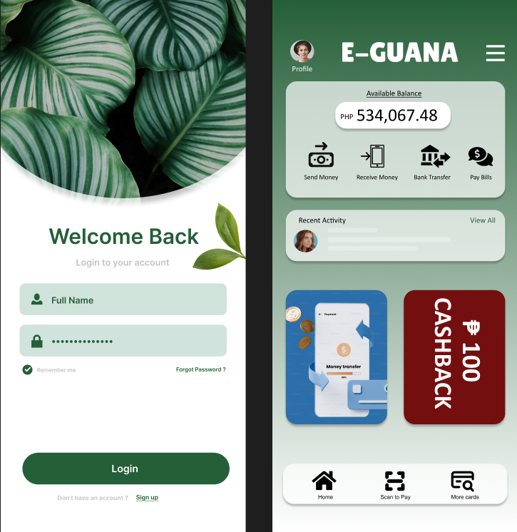
E-Guana
Mobile E-commerce UX.
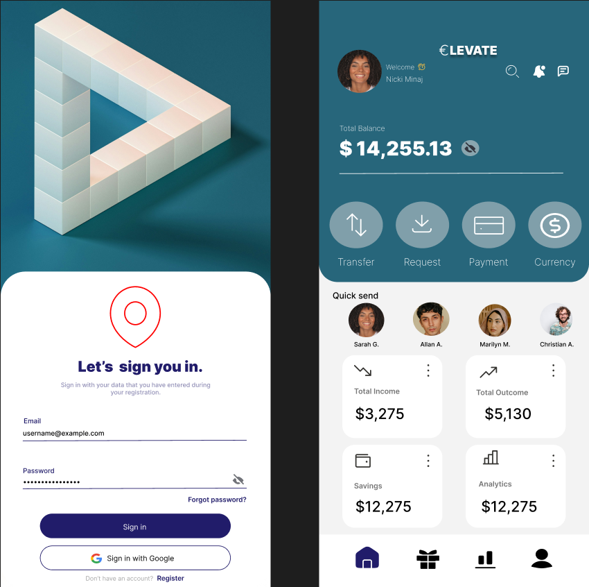
Elevate
Mobile E-commerce UX.
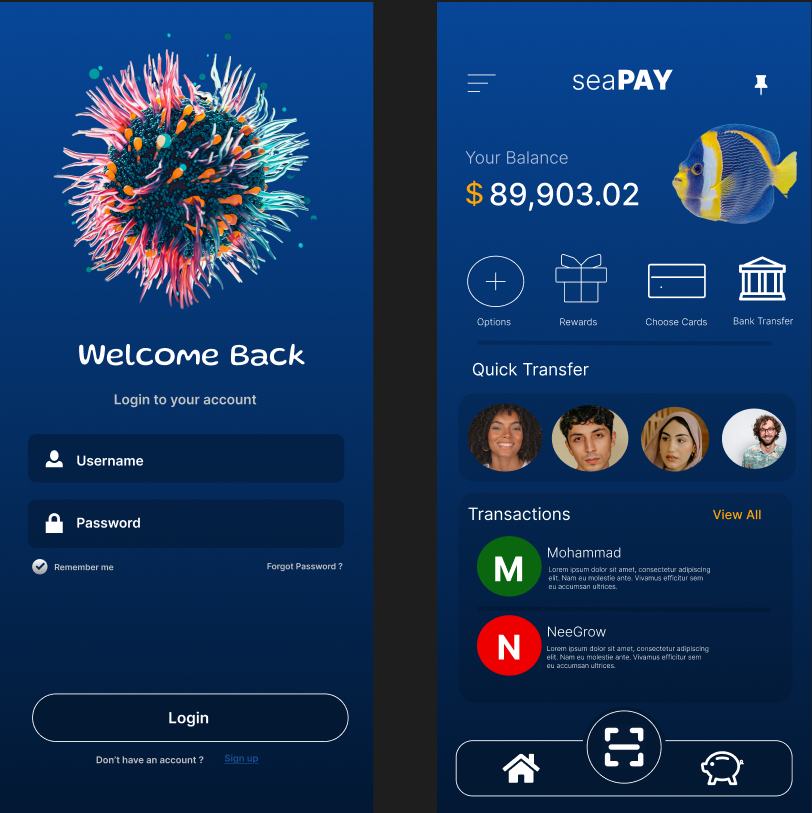
SeaPay
Mobile E-commerce UX.
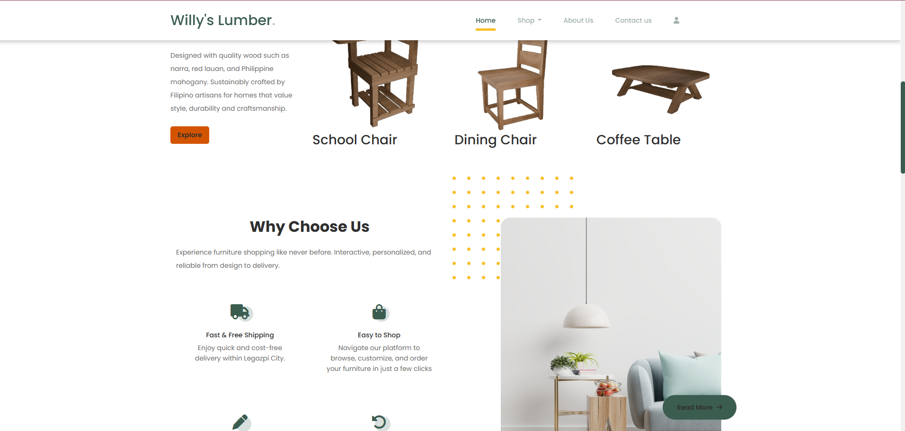
3D Furniture Customization
3D Furniture Customization
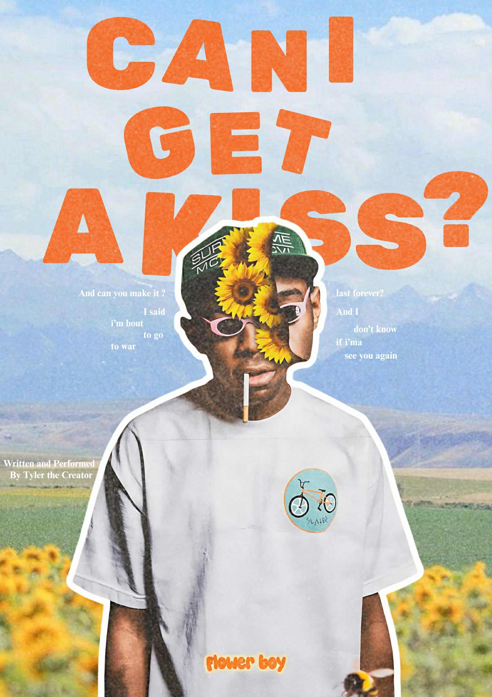
Tyler The Creator
Poster made in Canva
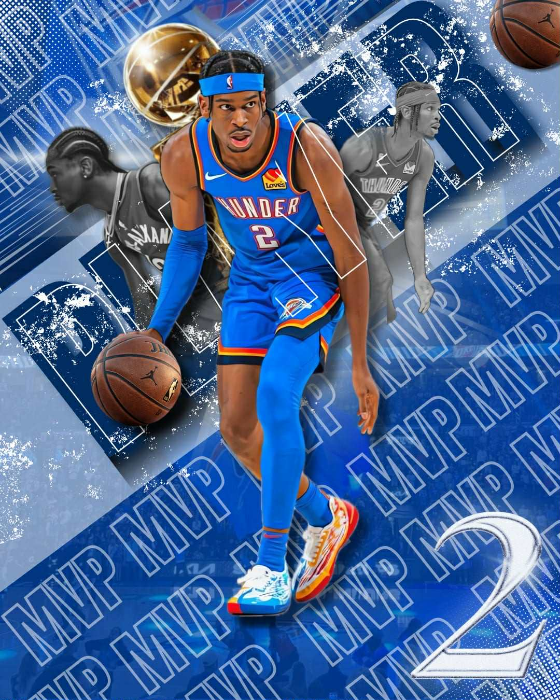
Shai-Gildeous-Alexander
Poster made in Canva
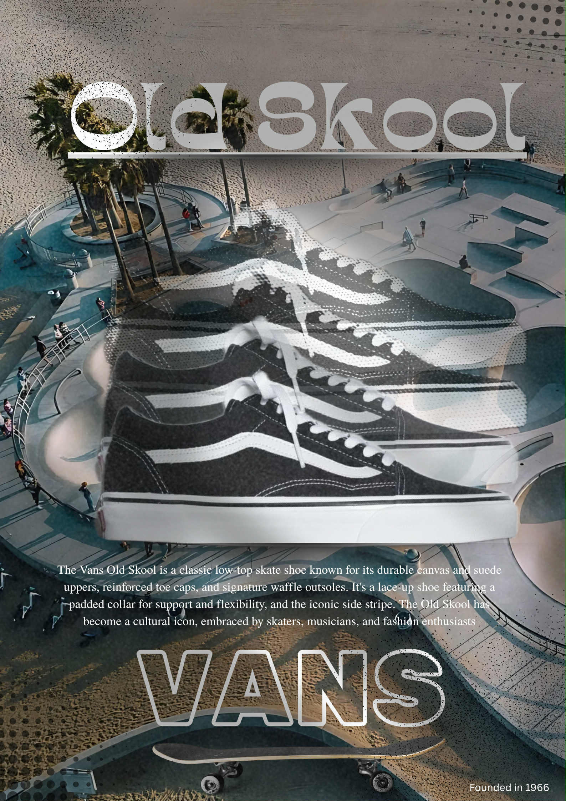
Vans of the Wall
Poster made in Canva
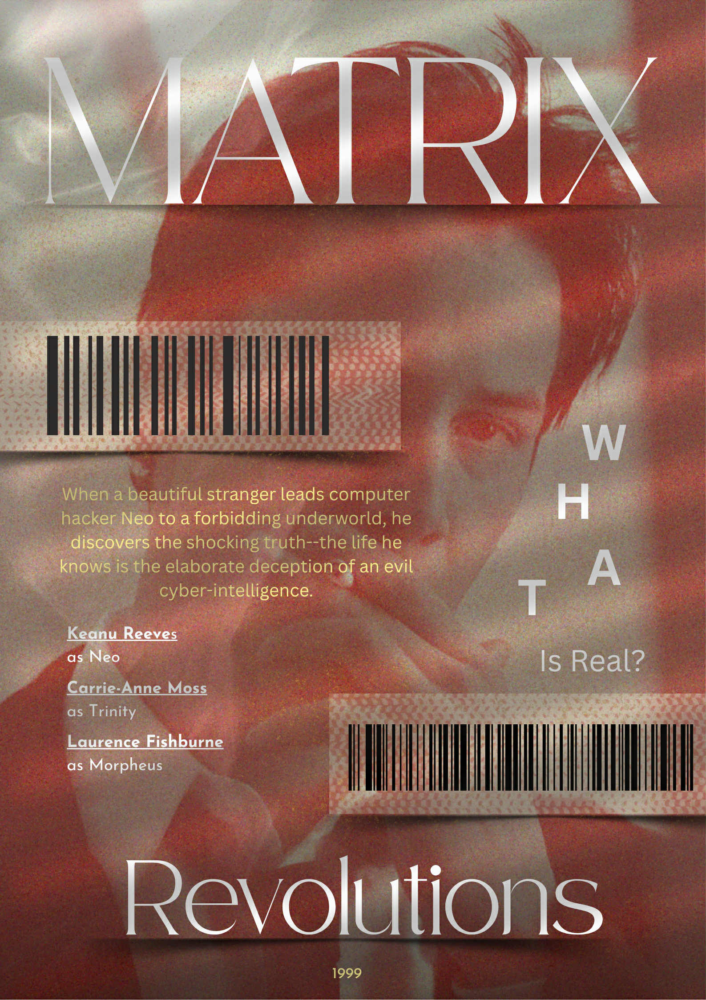
Keanu Reaves
Poster made in Canva

Central Cee
Poster made in Canva

Billie Eilish
Poster made in Canva
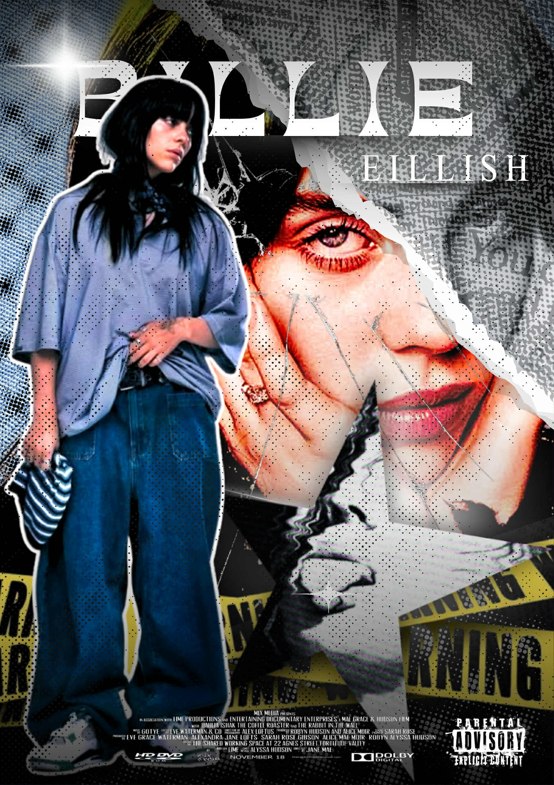
Billie Eillish
Poster made in Canva
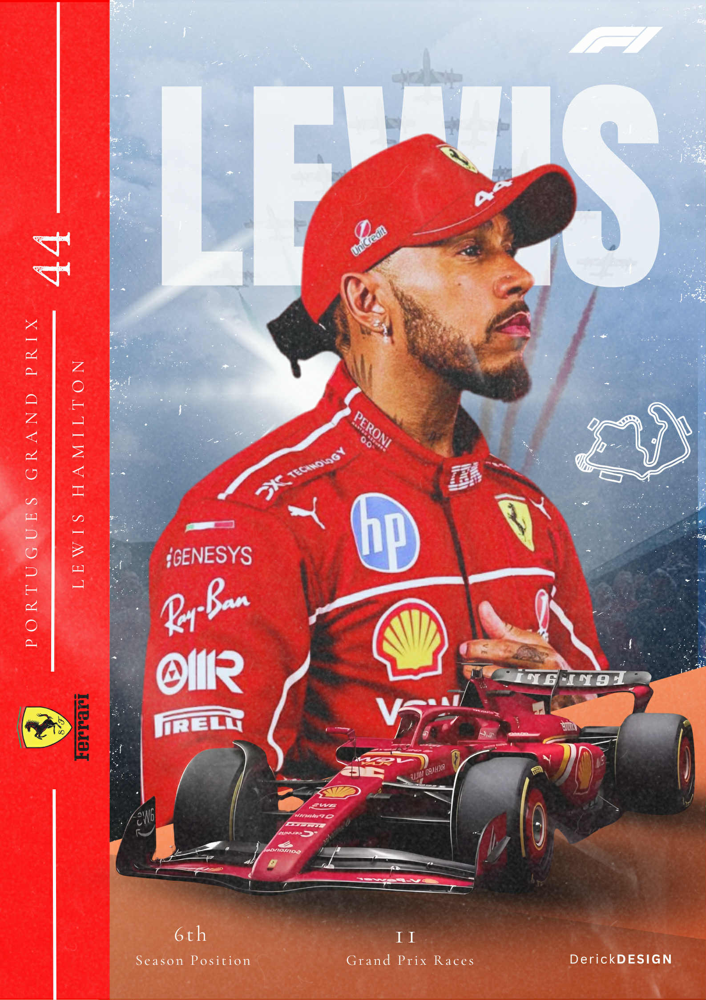
Louis Hamilton
Poster made in Canva

Jennie Kim "Mantra"
Poster made in Canva
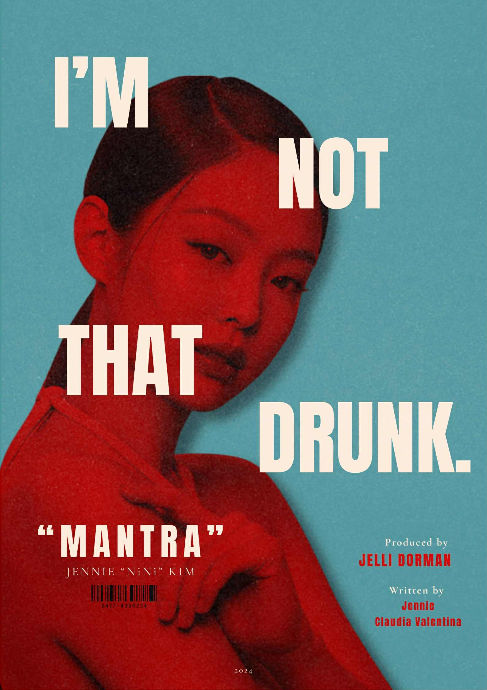
Jennie Kim
Poster made in Canva
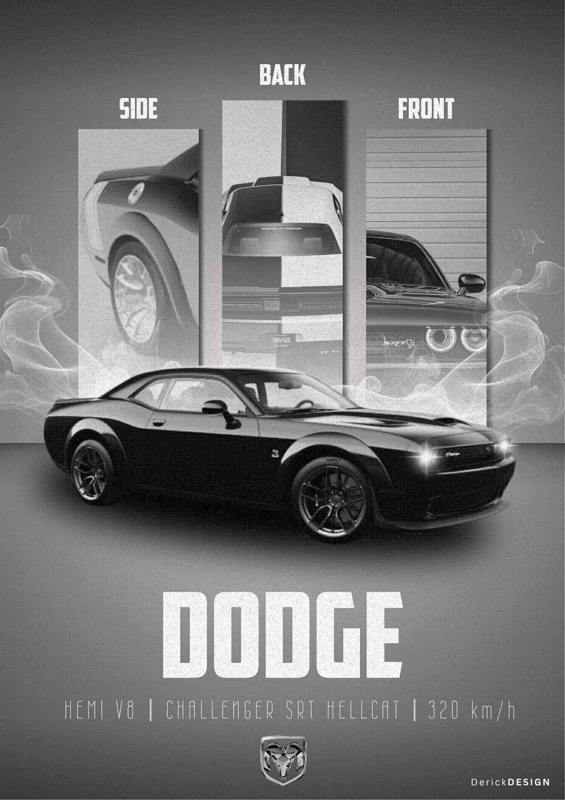
Dodge Charger
Poster made in Canva
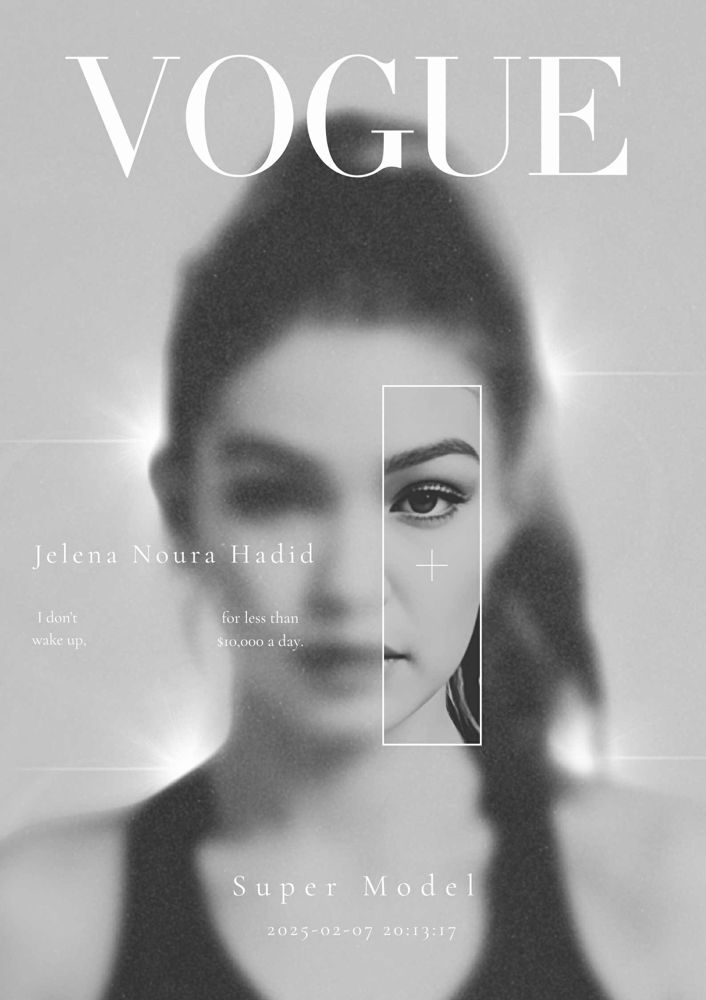
Gigi Hadid
Poster made in Canva
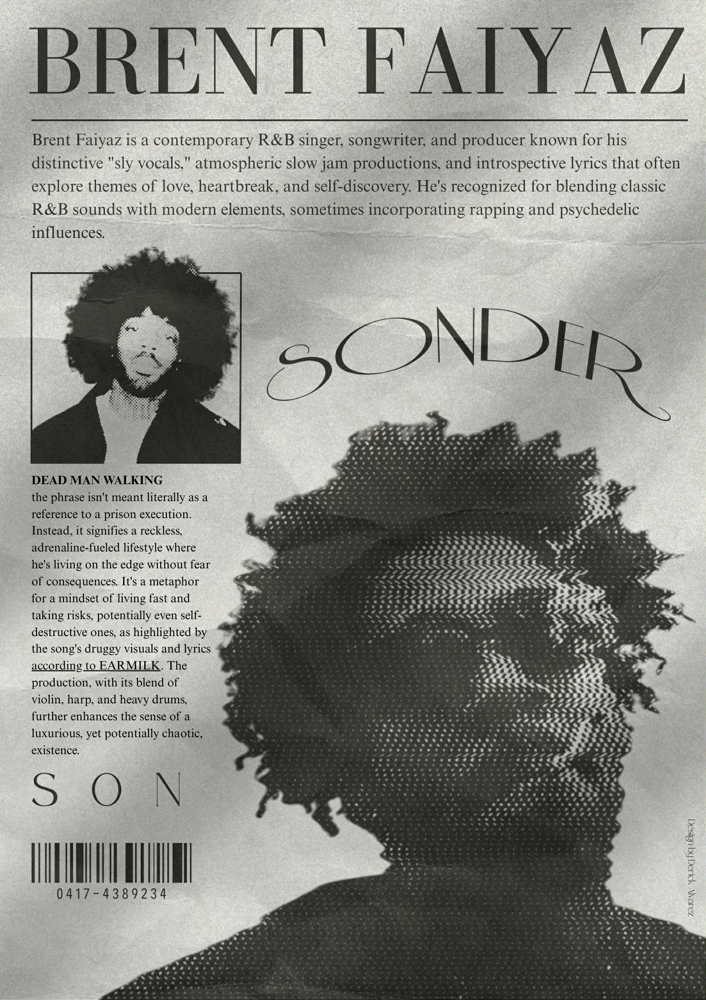
Brent Faiyaz
Poster made in Canva
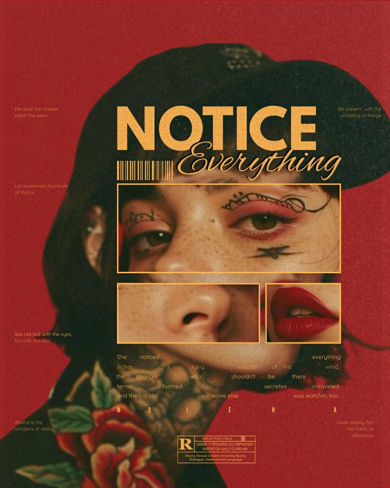
Mi-amor
Poster made in Canva

Futuristic Nike
Poster made in Canva

Silver Surfer
Poster made in Canva